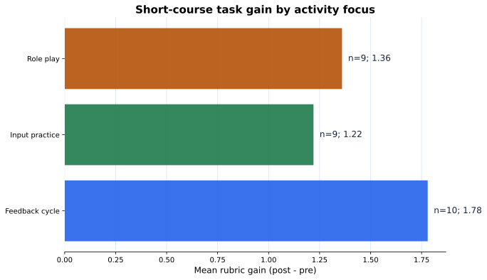
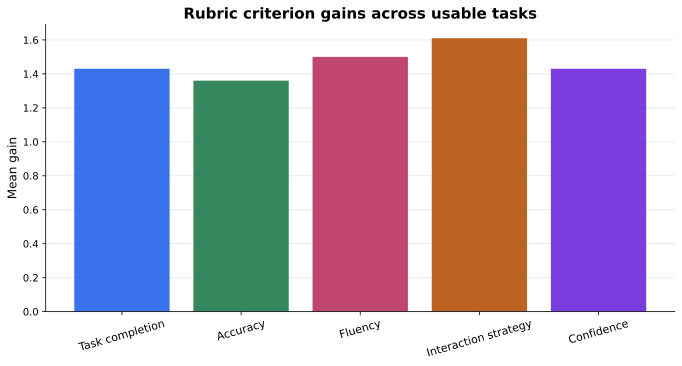

Tuần 07
Nghiên cứu TCSOL khóa ngắn hạn
Từ hoạt động dạy học đến rubric, dữ liệu và Methods draft.
30bản ghi task
28bản ghi dùng được
5tiêu chí rubric
Research loop
Không bắt đầu bằng chart
Bắt đầu bằng evidence design: learner làm gì, ta quan sát gì, và ta viết Methods thế nào.
Goalmục tiêu dạy
Targetcấu trúc đích
Tasklearner làm gì
Rubricquan sát nhất quán
Databảng task
Methodsđoạn viết
Câu hỏi
Activity focus tạo gain mô tả nào?
Câu hỏi nhỏ đủ để viết Methods và chuẩn bị Results sau này.
Trong một khóa Hán ngữ ngắn hạn về result complements, activity focus nào có descriptive rubric gain cao hơn?
Target
Target structure phải đủ cụ thể
Quá rộngngữ pháp Hán ngữ
Tốt hơnresult complements: 找到了, 听懂了
Paper-readyresult complements trong service dialogue
Rubric
Rubric là cách quan sát task
Taskhoàn thành nhiệm vụ
Accuracycấu trúc đúng
Fluencymạch lạc vừa đủ
Strategyhỏi lại, sửa, kéo dài tương tác
Confidencetự tin hoặc self-rating
Variable map
Methods cần biết mỗi cột làm gì
columnroleuse
one rowunitmột learner task record
learner_ididentifiermã ID, không phải unit
activity_focusgrouping variablemô tả activity
confidence_postrubric variablescore 1-5
main_difficultyqualitative codeinsight dạy học
Code
Gain = post score minus pre score
for stem, label in criteria:
usable[f"{stem}_gain"] =
usable[f"{stem}_post"] - usable[f"{stem}_pre"]Ví dụ không cần code: accuracy pre = 2, post = 4, vậy gain = 2.
Summary
Bảng activity không phải causal ranking
activitynmean gaindifficulty
Feedback cycle101.78self-correction
Role play91.36complement choice
Input practice91.22meaning-form link
Figure
Figure trình bày activity evidence

Criterion
Rubric criteria cho biết evidence nằm ở đâu

Writing
Methods draft = unit + task + rubric + limitation
Đơn vị phân tích là một learner task record. Activity focus được mã hóa thành input practice, role play, feedback cycle. Evidence được chấm bằng rubric 1-5.
Source note
Framework giúp viết learning outcome
ACTFLfunctional proficiency
Can-Dolearning target + rubric
CEFRaction-oriented task
Chinese StandardsHán ngữ quốc tế
Caution
Activity focus không phải causal evidence
YếuFeedback cycle hiệu quả nhất.
Tốt hơnFeedback cycle có descriptive rubric gain cao nhất trong synthetic usable records.
Transfer
Cùng logic dùng cho các hướng khác
TCSOLtask rubric
Hán-Việtdifficulty rubric
MTPEquality rubric
Policycoding scheme
Bài nộp
Submit một teaching-study design package
- variable map CSV
- rubric + activity summary CSV
- 2 figures + captions
- Methods draft 120-180 từ
- source note + limitation